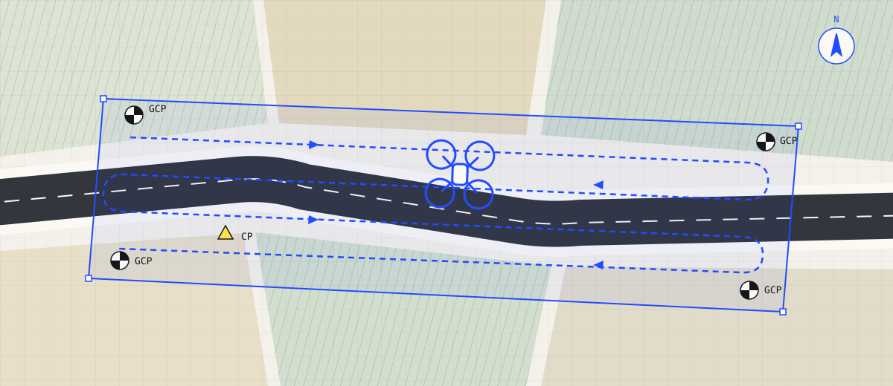

Drone Survey · Bergamo
Drone surveys. From flight to deliverables.
Orthophotos, models and sections to document site conditions, understand project interfaces and compare changes over time.

Applications
Photogrammetry and thermal imaging for expropriation, infrastructure, public works, construction sites, wildlife and the environment. The aircraft is selected to suit the assignment.
Expropriation and infrastructure
Orthophotos, surveys and project mapping to document land, site features, access routes and remaining portions.
Construction and maintenance
Repeated surveys to compare site conditions. Visual and thermal inspections.
Wildlife and environment
Wildlife surveys and monitoring with thermal imaging, from a distance. Environmental investigations on the ground.
From flight to deliverables
- 01
Define the assignment
Start with the location, the area to document, the survey objective and available documents. Deliverables are agreed before acquisition.
- 02
Plan and survey
The flight plan defines the area boundary, flight strips, exposure points and image footprints. Ground control points (GCPs) and checkpoints (CPs) support survey quality checks.
- 03
Process and deliver
The same area is examined on the ground and against the project. Orthophotos, point clouds, models and sections are organised into the agreed deliverables.
Agreed deliverables
Mapping and project design
Access routes, structures and the intervention corridor on the same georeferenced base.
Surfaces and 3D models
Point clouds and surfaces for profiles, sections and quantities.
Sections, cut and fill
Surveyed terrain compared with the proposed design line.
Drawings, models and technical sheets. Delivery formats can include GeoTIFF, LAS/LAZ, DXF, GeoPackage and PDF.
Pilot qualifications
Open A1/A3 · Open A2 · Specific STS-01 · Specific STS-02.

Have a site to document?
Email me with the location, objective and available documents.
n.valigi@gmail.com